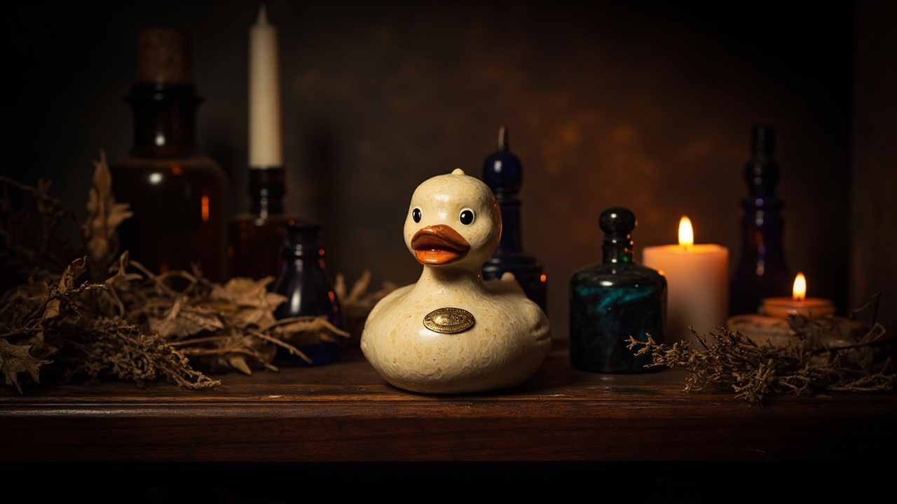

Size lineup
A five-piece ladder, 4 centimetres to 3 metres — cast in the same ivory-cream body, scaled at the wheel, sealed with a brass cartouche.
A shape that carries the house.
The oval cartouche is older than any of the rooms it has hung in. We borrowed its frame from the perfumer's cabinet — a vessel whose every label is meant to outlast its maker — and pressed it into brass for the chest of every Quacktory duck.
It survives every change of scale, every finish, every edition. It is the only constant.
"We reduced the palette to a single argument: ink against cream. The forest outside the cabinet is borrowed; the cabinet itself is only two values."
No third colour. No third voice. The same restraint that lets a Latin inscription hold a perfume label for a century.

A cabinet, lit by one candle.
The Apothecary is the direction our ducks arrive from: walnut shelves, glass stoppers, dried lavender tied with kitchen twine. The light in this room is not studio light. It is candlelight that has learned where the duck should sit.
The Collection
Six pieces, one cabinet. Each carries the cartouche; each is meant to be set on a different shelf.
A complete apothecary of five.
The five pieces, in matched ivory, hand-numbered, in a walnut display tray.
Enquire · AtelierBespoke · Architect · 1.5 — 3 m
The Atelier commissions single-piece monumental ducks for atria, lobbies and galleries. Each Architect duck is cast to a measured footprint, finished by hand, and shipped in a custom walnut crate.
- I. Measured footprint · 2 — 12 m²
- II. Aged ivory resin · brass cartouche
- III. Inscription · house or patron
- IV. Lead time · 14 — 22 weeks